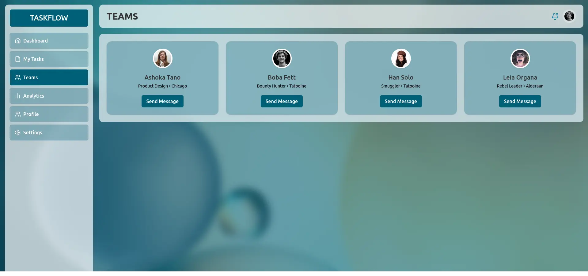
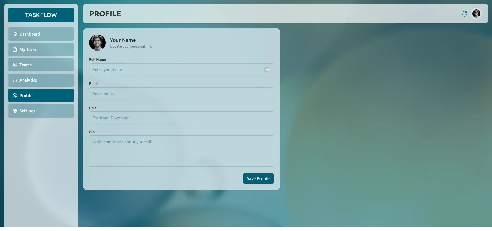

A multi-page task management dashboard with real routing, a working task table, and a live analytics chart.
Build a working multi-page dashboard with real client-side routing, a fully functional task list — not just a static mockup table — and a genuine chart rather than a placeholder image.


React 19 · React Router DOM · Vite · Tailwind CSS · Recharts · lucide-react